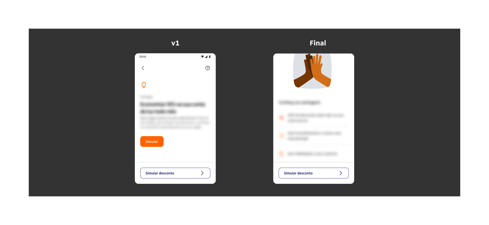
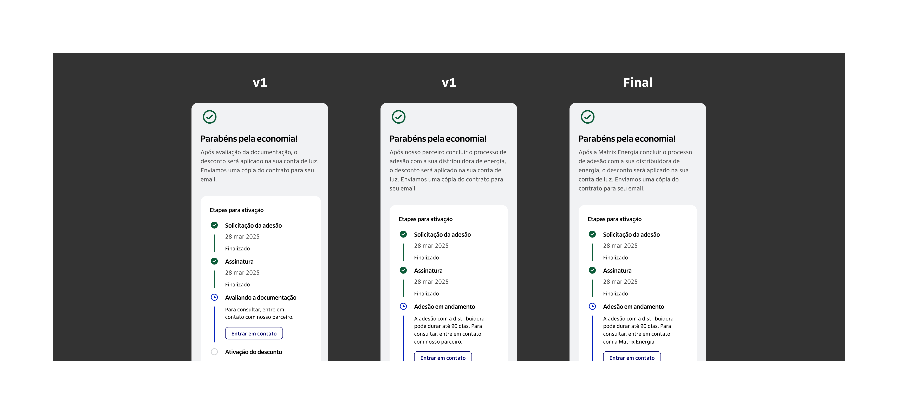
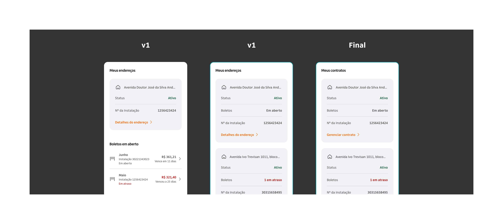

No budget, plenty of bureaucracy: how I built a testing process from scratch
When a R$40,000 usability test was uncertain and direct access to clients was blocked by internal bureaucracy, I needed another way. The answer was the RITE method.
- The project was part of Itaú's expansion into the free energy market, offering a 10% discount on electricity bills for individual customers spending over R$200/month.
- Bureaucracy between the bank's B2B and B2C structures and the high cost of traditional testing (R$40,000) made conventional research unfeasible.
- The RITE method was adopted as an alternative: an iterative testing approach that allows prototype adjustments between sessions, accelerating hypothesis validation.
- 6 tests were conducted across 5 prototype versions, covering the purchase and post-purchase journeys, identifying and resolving critical usability issues in real time.
- Midway through the tests, the budget for the research institute was approved. RITE had already refined the journey enough to make the formal test far more efficient and precise.
- The project reinforced that describing a usability problem clearly is a design skill, and that speed without judgment is not a method — it is just improvisation.
A new project, an untested journey and an uncertain budget
Itaú was expanding into the free energy market, aiming to become a reference in the sector following new regulations that allow consumers to migrate from the traditional regulated market to the open market. The initiative offered individual customers spending over R$200/month on electricity the chance to save 10% on their bills, without needing to invest in their own infrastructure like solar panels.
When I joined the project, a Visioning had already been designed. I was brought in to turn it into an MVP and, at the project coordinator's request, conduct usability testing with real users, something that had not yet been done.
We didn't know if the budget would come. So I started testing.
The project sat within IBBA, the bank's B2B structure, but the end client was Retail, a B2C structure. That difference created a bureaucratic barrier that made direct access to clients impossible. On top of that, we couldn't use Itaú's own research credits, making a traditional test with a research institute extremely expensive: around R$40,000.
The project manager was working to get the budget approved, but there was no guarantee it would happen. We needed to move forward regardless. The alternative was the RITE method.
Midway through the tests, the budget was approved. What started as a plan B became an essential part of the process: RITE refined the journey and the prototype to the point where the institute's test became far more efficient.
The tool that solved the problem
RITE (Rapid Iterative Testing and Evaluation) is a usability testing approach designed to identify and fix problems quickly and continuously, during the testing process itself. Unlike traditional testing, RITE allows prototype adjustments between sessions, or even during a session, without waiting for all tests to finish before acting.
The method originated in 2002 at Microsoft Games Studios during the development of Age of Empires II. Engineers realized the development pace was too slow and needed an approach that allowed immediate iteration and implementation of improvements.
During testing, problems are classified into three categories:
- Obvious cause and quick fix: corrected immediately and tested in the next session
- Obvious cause but harder to fix quickly: adjustments started to be tested in the following session
- No obvious cause or solution: more data needed before taking any action
Six tests, five prototypes, many discoveries
For the tests, two journeys were considered: the end-to-end purchase journey and the post-purchase journey. Based on these, I developed a test script with targeted questions aimed at validating hypotheses built by me and the business team. For recruitment, we looked for people spending over R$200/month on electricity.
We ran 6 tests across 5 different prototype versions.
Home screen
In the first version, users didn't notice there was more content below the fixed button — it was blocking the visual flow. We also identified redundancy: two buttons with the same function placed close together created confusion.
The decision was to keep the first button to gather more data on whether it was truly necessary, and move the discount simulation button to the bottom of the screen.

Home screen: v1 with fixed button blocking content flow, and final version with simulation button repositioned
Checkout screen
In the first test, users assumed the discount would be applied the month after signing up, which was incorrect. We updated the journey to clearly communicate that there would be an onboarding process and inform the estimated timeframe for completion.
In the next test, a new issue emerged: users had no idea who the partner behind the service was. One participant joked it was the "mystery partner." We added the partner's name to the journey.
The final version featured a closing screen with much clearer next steps in the contracting flow.

Checkout screen: from unclear partner identity and missing onboarding context to a clear closing screen with defined next steps
Product and billing cards
In the first version, the open billing section competed visually with the address card, and users felt the information was repetitive. We removed the section and moved the billing line inside the card itself.
In the next test, users could only find information like payment history through trial and error. We updated the section title and action button to be more direct.
The final version had a clearer title and a more objective call-to-action, enabling users to self-serve without friction.

Product and billing cards: from competing sections and unclear labels to a consolidated card with direct action
Product cancellation
The feedback here was sharp: having to contact the partner to cancel a service purchased through the app was considered a terrible experience. As it was a more complex issue to resolve, we decided to gather more data before building the cancellation journey.
RITE opened the door for the definitive test
With the prototype refined through RITE, we ran a full usability testing round conducted by a research institute.
The RITE method was essential not just for validating hypotheses, but for refining the journey, the prototype, and the test script itself. This allowed the team to get the most out of the institute's testing sessions, extracting new insights with greater depth and precision.
What I would bring to the next project
Think about context before applying RITE. Do you have time to update the prototype between sessions? Can you run multiple tests in the same day? The method only works well when there are real conditions for iteration.
Have a solid foundation. Define clear hypotheses and specific objectives before you start. Knowing what you want to discover is what makes RITE efficient, not just fast.
RITE is not chaos. Not every user error or hesitation requires an immediate change. Avoid rushed decisions: observe, analyze, and then validate.
Be agile, but responsible. Every prototype change must be thought through strategically. Agility does not mean disorganization. It means focus, judgment, and collaboration.
Next case